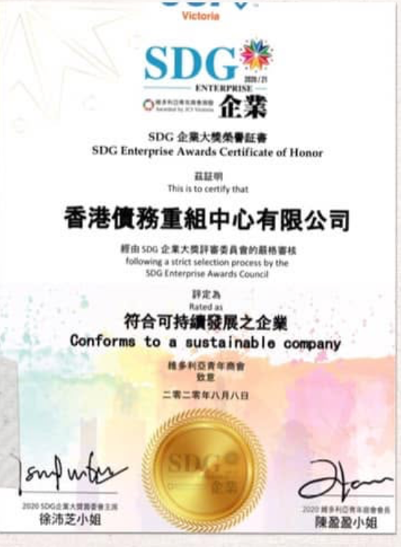
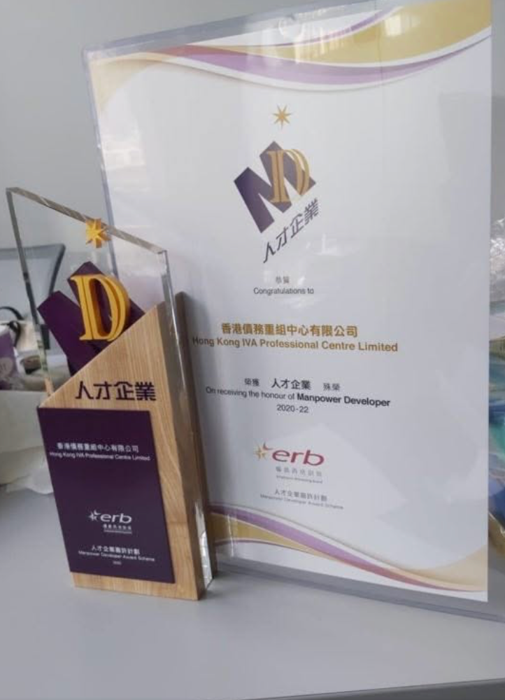
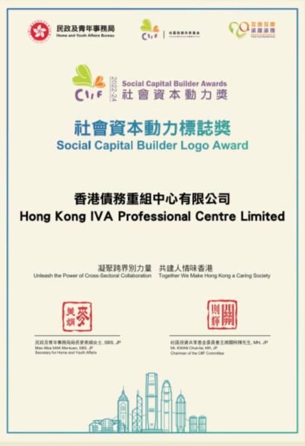

了解 IVA 與 DRP 方案
具相關專業資格及 IVA 個案處理經驗的團隊
由具相關專業資格及 IVA 個案處理經驗的團隊，協助整理基本資料，了解個人自願安排（IVA）、DRP 的相關程序、條件及可能影響。
初步資料整理及供款估算
調整現有帳項總額及每月還款，查看固定參數的初步換算；結果只作資料整理參考。
HK$ 500,000
HK$50,000HK$8,000,000
HK$ 10,000
HK$2,000HK$200,000
初步每月供款參考HK$ 5,200
按固定參數換算的利息調整金額HK$ 97,500
參考安排年期4 年
程序／追收安排視程序階段及個案
現有月供佔帳項總額比例2.00%
目前查看 IVA 固定換算參考。實際供款、利息安排、年期及法律效果均須按完整資料確認。
此工具沿用固定換算參數，只供初步參考，不等同個別建議、報價、獲接納預測或保證結果。金額只在本頁計算，不會儲存或傳送。
查看估算方式及重要說明
計算器按你輸入的現有帳項總額及每月還款，以固定換算參數換算每月供款參考、利息調整金額及參考年期；切換 IVA／DRP 會使用相應參數。
現有月供比例＝現有月供 ÷ 現有帳項總額 × 100%，不是利率或清還進度。估算未計入收入、必要生活開支、資產、相關機構要求、服務費用、實際利率、法律程序或其他個案因素。實際安排是否適用、會否獲接納、供款及利息如何安排，以及程序上的法律效果，均須按個案及程序階段確認。
服務流程
了解基本資料，再確認各階段安排
STEP 01
初步了解情況
整理基本財務、收入及還款資料。
STEP 02
資料分析
按個別情況整理財務資料及相關文件。
STEP 03
了解不同安排
說明相關程序、條件及可能影響。
STEP 04
個案跟進
按實際情況跟進相關程序及文件。
資料由本公司提供。過往個案結果不代表其他個案必然取得相同安排。
企業榮譽
公司榮譽
以下證書圖片由公司提供；名稱及有效資料以證書內容和頒發機構記錄為準。

01
SDG 企業大獎榮譽證書
SDG Enterprise Awards Certificate of Honor

02
僱員再培訓局「人才企業」嘉許
Accredited As “Manpower Developers” by The Employees Retraining Board

03
民政及青年事務局社會資本動力標誌獎
Social Capital Builder Logo Award
客戶現時可能遇到的情況
先整理資料，了解相關安排及下一步
每月還款壓力增加
每月需要處理多項還款，希望先了解不同安排及可能影響。
收支開始出現壓力
現時收入與每月支出之間較難取得平衡。
有多項還款安排需要整理
希望先整理現有財務及還款資料，再了解下一步安排。
收到相關文件
希望了解文件內容以及後續需要注意的程序。
IVA 及 DRP 常見問題
了解程序、條件及資料處理方式
什麼是 IVA？
IVA 是一項有法定程序的個人自願安排，實際條件及是否適用須按個別財務資料評估。
IVA 一般需要哪些基本資料？
一般需要收入、支出、現有帳項及還款資料，實際文件要求會按個案及程序確認。
IVA 是否會影響信貸紀錄？
IVA 可能影響信貸紀錄；還款後如何更新及申請刪除帳戶資料，須按相關規定及個案確認。
IVA 期間工作會否受到影響？
一般工作安排未必受影響，但部分專業、持牌或金融職位可能有申報要求，應按職業規定了解。
DRP 是什麼？
DRP 是按個別情況與相關機構了解還款安排的程序，條件及結果須視乎資料及回覆。
IVA 與 DRP 有什麼不同？
兩者的程序、文件要求、約束範圍及可能影響不同，應按個案資料了解。
初步諮詢是否收費？
初步諮詢不收費；正式委託前會說明服務範圍及書面費用。
資料會如何處理？
資料會按私隱政策及個人資料收集聲明處理，只用於回覆及跟進本次查詢。
IVA 個案參考
以下資料只作個案參考，實際安排須按個別情況評估。
科技公司銷售
信用卡循環息累積
- 個案背景
- 信用卡循環息累積
- 現有帳項總額
- HK$382,500
- 原有每月還款
- HK$12,500
- 個案安排每月還款
- HK$6,800
- 個案安排期
- 48 個月
- 處理方向
- IVA
保險公司文員
因家人醫療開支增加，需要整理財務安排
- 個案背景
- 因家人醫療開支增加，需要整理財務安排
- 現有帳項總額
- HK$152,800
- 原有每月還款
- HK$6,200
- 個案安排每月還款
- HK$3,800
- 個案安排期
- 30 個月
- 處理方向
- DRP
貨車司機
疫情期間收入大幅下跌，需要重新整理還款資料
- 個案背景
- 疫情期間收入大幅下跌，需要重新整理還款資料
- 現有帳項總額
- HK$525,000
- 原有每月還款
- HK$18,200
- 個案安排每月還款
- HK$8,700
- 個案安排期
- 60 個月
- 處理方向
- IVA
為保護客戶私隱，以上案例姓名、部分地區及細節已作適當修飾；數據及方案結果均為真實個案記錄。實際方案及結果需經專業評估後確定。